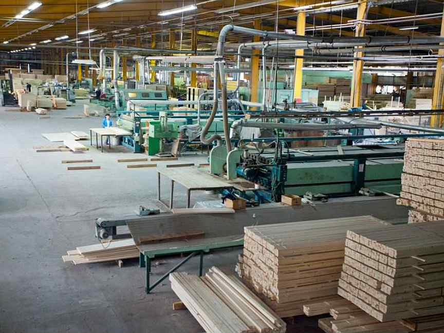

О нас
История Бобруйского фанерно-деревообрабатывающего комбината (ныне ОАО «ТвинТрее») началась в 1926 г., поэтому, можно с уверенностью сказать, что ОАО «ФанДОК» считается одним из старейших предприятий города Минск с более чем 85-летней историей. Стоит отметить, что в 1913 г. в городе открылось несколько лесопильных заводов и фабрик. Но, к глубокому сожалению, уже в 1918 г. во время оккупации белополяками предприятие было практически уничтожено.

8 ноября 1929 г. — произошло знаменательное событие в истории отрасли деревообработки, так как состоялось торжественное открытие Бобруйского деревообрабатывающего комбината, крупнейшего в Европе. В состав комбината входили лесопильный, фанерный, стружечный, бочарный цеха, белодеревный завод, сушилки, электростанция. Указом Президиума Верховного Совета СССР от 7 января 1971 г.Бобруйский фанерно-деревообрабатывающий комбинат награжден орденом Октябрьской революции.
Ассортимент нашей продукции достаточно разнообразный: кухонная и корпусная мебель различных моделей и форм с фасадами из массивной древесины дуба, сосны, ольхи, мебельного щита, а также облицованная натуральным шпоном и пленками; стеллажная мебель из мебельного щита, дверные блоки всех типоразмеров для жилых домов, облицованные строганным шпоном твердолиственных пород со сплошным заполнением дверного полотна и различными дизайнерскими решениями филенок; доски пола, щит мебельный, столярная плита, шпон строганный, фанера клееная общего назначения, тонкая ТДСтП.
